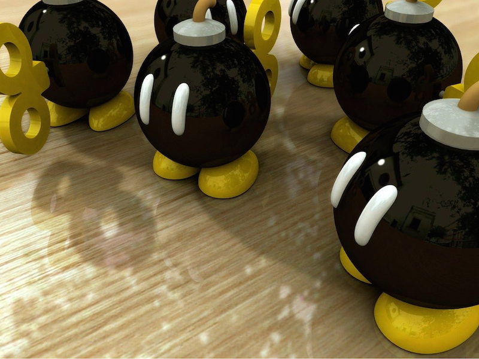
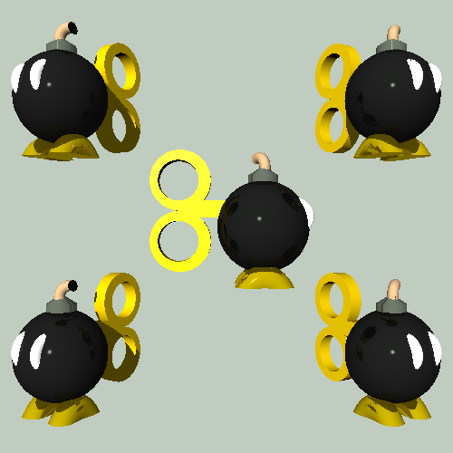
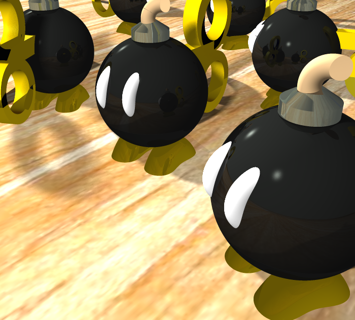

Bob-omb Raytracing
This is a description of the objectives I completed for my CS 488 Computer Graphics final project. The end goal was to replicate the following image:
Objective 1: Additional primitives
Objective 2: Constructive solid geometry
These objects are constructive solid geometry of a cylinder with a sphere. The top row is union, the second is intersection, and the bottom two are differences.
Objective 3: Bob-omb modeled
The models were made using a combination of the primitives with constructive solid geometry.
- The eyes are toruses unioned with the main body
- The beige fuse is a torus with cubes differenced to cut off parts of it
- The grey blasting cap is a cylinder intersected with a cone, differenced with another cylinder at the top of the cone
- The wind up key is two cylinders unioned with a cube, with two smaller cylinders differenced inside
- The feet are toruses differenced with cubes
Objective 3, 4, 7: Texture mapping, reflection
The other half of objective 3 was modeling the tree seen in the reflection. Since a polygonal mesh of a tree would be too costly, I did it by texture mapping a planar mesh and putting it behind the camera in a way that didn't block the light source / cast shadows. The effect didn't turn out as well as I hoped, so it is not included in my final render.


Objective 5: Anti-aliasing
I implemented anti-aliasing with 3x3 regular supersampling (image on the right). The left is the original for comparison.


Objective 6: Soft shadows
Soft shadows were done through distributed ray tracing with 36 stochastic rays.
Objective 7: Reflection
Objective 8: Glossy reflection
Objective 10: Final scene
Combining everything, below is my rendering of the scene. Total render time: 5 hours 10 minutes, multithreaded on 4 cores.
Extra Objective: Multi-threading
Since I wasn't able to implement grid partitioning (objective 9), I instead implemented multithreading to accelerate my raytracing. Below is a graph comparing the time it took to render the macho-cows image with anti-aliasing turned on for differing numbers of threads.